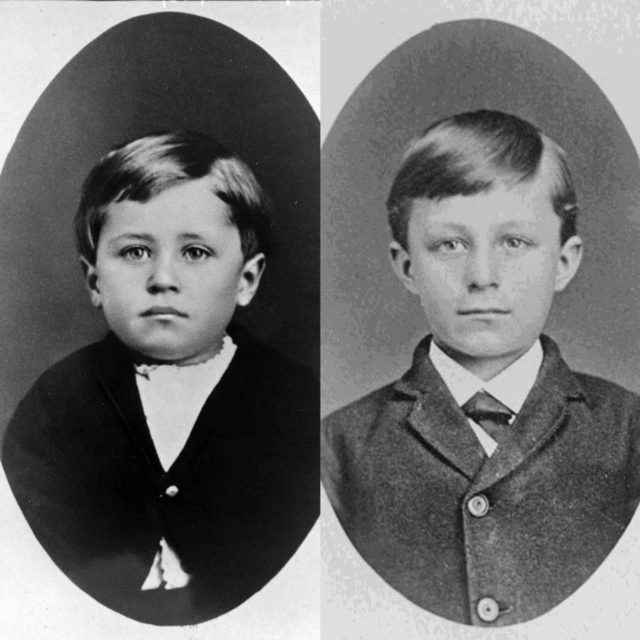

In the realm of human history, there are individuals whose relentless pursuit of innovation and determination shape the world as we know it. Among these exceptional figures, the Wright brothers, Orville and Wilbur, stand tall as pioneers of aviation. Their groundbreaking achievements revolutionized transportation, ushering in the age of flight. This essay explores the lives, contributions, and legacy of the Wright brothers.
Orville Wright (1871–1948) and Wilbur Wright (1867–1912) were born in the Midwest of the United States and grew up in a modest family l. Their upbringing instilled in them a sense of curiosity and a deep passion for mechanics. The brothers possessed a tremendous amount of dedication to unravel the secrets of flight and overcoming the force of gravity.
Inspired by the work of aviation pioneers such as Otto Lilienthal and Samuel Langley, the Wright brothers embarked on a journey of discovery. They conducted meticulous research, built wind tunnels, and designed their own aircraft. Their persistent pursuit of knowledge led them to conduct numerous experiments and make several important discoveries.
Aerodynamics: The Wright brothers were among the first to fully comprehend the principles of aerodynamics. Through their experiments, they discovered the significance of wing shape, camber, and control surfaces, including the importance of the three-axis control systems (roll, pitch, and yaw) which allows an aircraft to maintain stability and maneuverability.
Propeller Design: They recognized that propulsion played a vital role in flight due to which they developed efficient propeller designs. They understood that an aircraft's ability to generate thrust was crucial for it to generate flight. Their propeller design concepts are still widely used in modern aviation.
Kitty Hawk Experiments: In 1903, the Wright brothers made history at Kitty Hawk, North Carolina, where they successfully flew the world's first controlled, powered and sustained flight. Their aircraft, the Wright Flyer, had a wingspan of 12.3 meters and was powered by a 12-horsepower engine. This achievement marked a significant impact in human history and set the stage for further advancements in aviation.
The Wright brothers' accomplishments are honored across the globe and have triggered a rapid evolution in the aviation industry. Their efforts inspired a wave of innovation, with countless engineers and inventors building upon their work. The aviation industry quickly took flight, leading to the development of more advanced aircrafts, commercial airlines, and global connectivity.
Furthermore, the Wright brothers' impact extended beyond aviation. Their scrupulous approach to problem-solving and engineering has served as a blueprint for inventors and entrepreneurs today. Their dedication to research, precise testing and attention to every tiny detail taught valuable lessons about the importance of perseverance and determination to succeed in life.
The Wright brothers, Orville and Wilbur have transformed the world through their relentless pursuit of flight. Their contributions to aerodynamics, propeller design, and the development of the first functional aircraft laid the foundation for the modern aviation industry and paved the way for humanity to conquer the skies. Their legacy as pioneers of aviation will continue to inspire generations to dream big, push boundaries, and strive for greatness.